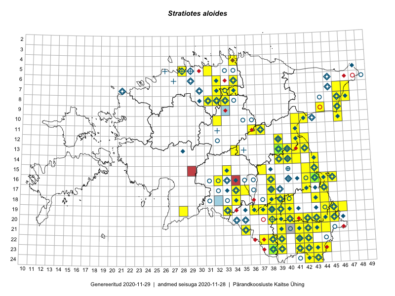

Stratiotes aloides
Uuendatud: 2016-12-08
Kaardile koondatud taksonid: Stratiotes aloides L.

Kaart põhineb 58 vaatlusel. Taime on leitud 43 ruudust.
| Ruut | Vaatleja(d) | Vaatlusaeg | Kirje tüüp | Viide andmebaasikirjele |
|---|---|---|---|---|
| 18-44 | Peedu Saar | 2015-07-04 | ruut/ala | vaata PlutoFis |
| 16-45 | Toomas Kukk, Eerik Leibak | 2015-07-29 | ruut/ala | vaata PlutoFis |
| 18-40 | Malle Leht | 2015-07-27 | ruut/ala | vaata PlutoFis |
| 13-41 | Peedu Saar | 2015-08-11 | ruut/ala | vaata PlutoFis |
| 20-45 | Katrit Karus, Tõnu Feldmann | 2015-07-27 | ruut/ala | vaata PlutoFis |
| 20-41 | Katrit Karus, Tõnu Feldmann | 2015-07-28 | ruut/ala | vaata PlutoFis |
| 19-45 | Tõnu Feldmann, Katrit Karus | 2015-07-27 | ruut/ala | vaata PlutoFis |
| 16-38 | Peedu Saar, Ott Luuk | 2015-09-02 | ruut/ala | vaata PlutoFis |
| 13-42 | Katrit Karus, Tõnu Feldmann | 2015-07-29 | ruut/ala | vaata PlutoFis |
| 13-34 | Katrit Karus, Tõnu Feldmann | 2015-08-05 | ruut/ala | vaata PlutoFis |
| 06-32 | Katrit Karus, Tõnu Feldmann | 2015-08-04 | ruut/ala | vaata PlutoFis |
| 05-31 | Katrit Karus, Tõnu Feldmann | 2015-08-04 | ruut/ala | vaata PlutoFis |
| 20-45 | Toomas Kukk, Timo Luhamäe, Kersti Tambets, Sten Mander, Janika Sammasto | 2014-07-30 | ruut/ala | vaata PlutoFis |
| 14-43 | Thea Kull, Eerik Leibak | 2015-07-06 | ruut/ala | vaata PlutoFis |
| 15-43 | Thea Kull, Eerik Leibak | 2015-07-06 | ruut/ala | vaata PlutoFis |
| 08-46 | Thea Kull, Eerik Leibak | 2015-07-23 | ruut/ala | vaata PlutoFis |
| 07-34 | Jana-Maria Habicht, Ester Valdvee | 2015-07-20 | ruut/ala | vaata PlutoFis |
| 07-47 | Thea Kull, Eerik Leibak | 2015-07-21 | ruut/ala | vaata PlutoFis |
| 10-32 | Ott Luuk | 2015-08-03 | ruut/ala | vaata PlutoFis |
| 23-39 | Eeva-Maria Jeletsky, Tarmo Niitla | 2015-07-24 | ruut/ala | vaata PlutoFis |
| 14-40 | Ulvi Selgis | 2015-08-27 | punkt | vaata PlutoFis |
| 08-33 | Erkki Otsman, Sergei Smirnov | 2015-07-02 | ruut/ala | vaata PlutoFis |
| 07-34 | Kai Rünk, Ülle Jõgar, Illi Tarmu | 2015-05-22T07:00Z | ruut/ala | vaata PlutoFis |
| 14-40 | Erkki Otsman, Sergei Smirnov | 2015-07-22 | ruut/ala | vaata PlutoFis |
| 17-42 | Kirsi Loide, Marje Loide | 2015-07-27 | ruut/ala | vaata PlutoFis |
| 10-32 | Thea Kull | 2014-08-02 | ruut/ala | vaata PlutoFis |
| 19-46 | Meeli Mesipuu, Thea Kull | 2015-08-19 | ruut/ala | vaata PlutoFis |
| 22-38 | Kadi Palmik, Helle Mäemets | 2015-08-19 | ruut/ala | vaata PlutoFis |
| 17-34 | Kadi Palmik, Helle Mäemets | 2015-08-14 | ruut/ala | vaata PlutoFis |
| 10-32 | Ott Luuk | 2015-08-10 | punkt | vaata PlutoFis |
| 15-33 | Kadi Palmik, Helle Mäemets | 2015-08-14 | ruut/ala | vaata PlutoFis |
| 12-41 | Kadi Palmik, Helle Mäemets | 2015-07-24 | ruut/ala | vaata PlutoFis |
| 08-47 | Thea Kull, Peedu Saar | 2014-07-26 | ruut/ala | vaata PlutoFis |
| 16-45 | Peedu Saar | 2016-05-11 | ruut/ala | vaata PlutoFis |
| 16-45 | Ulvi Selgis | 2016-06-04 | ruut/ala | vaata PlutoFis |
| 21-44 | Toomas Kukk, Tiit Hallikma, Johannes Kõdar | 2016-06-14 | ruut/ala | vaata PlutoFis |
| 22-41 | Toomas Kukk, Tiit Hallikma | 2016-06-16 | ruut/ala | vaata PlutoFis |
| 18-39 | Peedu Saar, Tarmo Niitla | 2016-06-13 | punkt | vaata PlutoFis |
| 17-44 | Maret Gerz, Liina Oja | 2016-06-13 | ruut/ala | vaata PlutoFis |
| 18-43 | Maret Gerz, Liina Oja | 2016-06-17 | ruut/ala | vaata PlutoFis |
| 21-42 | Vivika Väli, Ülo Väli | 2015-07-26 | ruut/ala | vaata PlutoFis |
| 18-39 | Tarmo Niitla, Peedu Saar | 2016-06-13 | ruut/ala | vaata PlutoFis |
| 10-42 | Ott Luuk, Eerik Leibak | 2016-08-04 | ruut/ala | vaata PlutoFis |
| 23-44 | Peedu Saar, Karin Kikas | 2016-08-19 | ruut/ala | vaata PlutoFis |
| 15-42 | Karin Kikas, Elle Rajandu | 2016-06-30 | ruut/ala | vaata PlutoFis |
| 23-44 | Karin Kikas, Peedu Saar | 2016-08-19 | punkt | vaata PlutoFis |
| 07-33 | Peedu Saar, Toomas Kukk | 2016-09-13 | ruut/ala | vaata PlutoFis |
| 07-33 | Peedu Saar, Toomas Kukk | 2016-09-15 | punkt | vaata PlutoFis |
| 10-46 | Rein Kalamees, Kersti Püssa | 2016-06-28 | ruut/ala | vaata PlutoFis |
| 09-46 | Rein Kalamees, Kersti Püssa | 2016-06-28 | ruut/ala | vaata PlutoFis |
| 07-46 | Rein Kalamees, Kersti Püssa | 2016-06-09 | punkt | vaata PlutoFis |
| 17-42 | Jaak-Albert Metsoja, Mari Metsoja | 2016-06-13 | ruut/ala | vaata PlutoFis |
| 08-32 | Peedu Saar, Ott Luuk | 2016-09-28 | punkt | vaata PlutoFis |
| 08-32 | Peedu Saar, Ott Luuk | 2016-09-28 | punkt | vaata PlutoFis |
| 17-44 | Peedu Saar | 2016-08-24 | ruut/ala | vaata PlutoFis |
| 08-32 | Ott Luuk, Peedu Saar | 2016-09-28 | ruut/ala | vaata PlutoFis |
| 08-31 | Toivo Sepp, Peedu Saar | 2016-07-18 | ruut/ala | vaata PlutoFis |
| 10-42 | Ott Luuk, Eerik Leibak | 2016-08-04 | punkt | vaata PlutoFis |